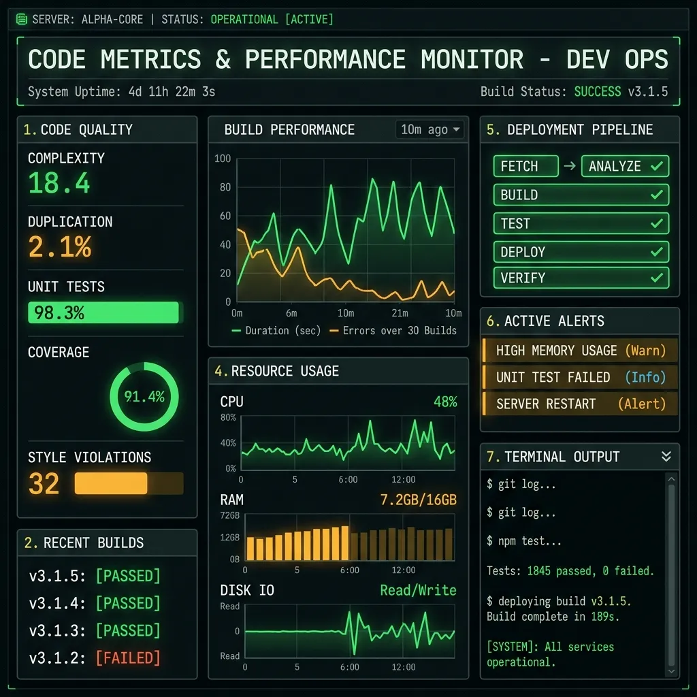
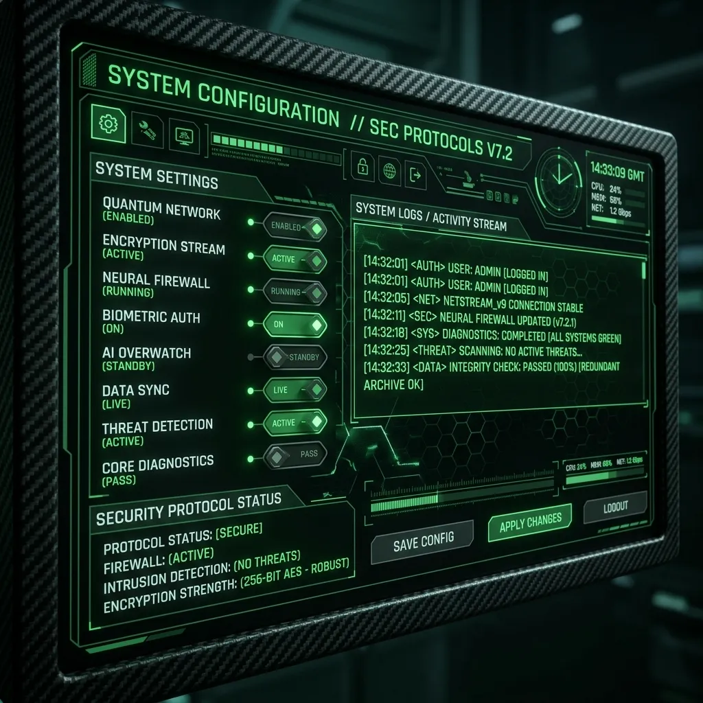
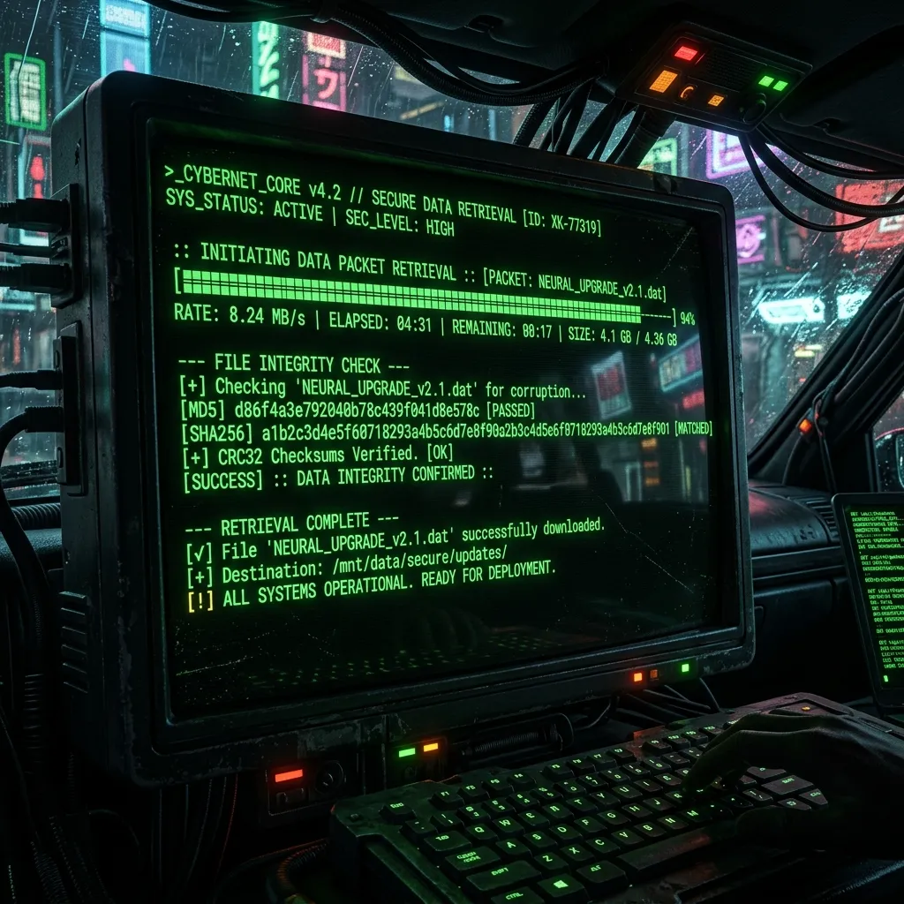

En gelişmiş ağ teknolojileri ve optimize edilmiş medya işleme mimarisi ile donatılmış yeni nesil teknik analiz ve erişim merkezine hoş geldiniz. V10 güncellemesi, tam performans hedeflenerek sıfırdan derlenmiştir.
[Sistemi İndir - V10]Mikro-optimizasyon
Düşük Bellek Kullanımı
Hızlı Veri İletimi
Uçtan Uca Şifreleme
V10 Güncellemesinin Yazılım Mimarisi ve Yenilikleri
Netv Gold V10, çekirdek yazılım mimarisinde yapılan kapsamlı optimizasyonlar sayesinde önceki sürümlere kıyasla olağanüstü bir performans artışı sunmaktadır. Geliştirici ekip, bellek sızıntılarını önlemek ve veri işleme hızını maksimize etmek amacıyla kod tabanını tamamen elden geçirmiştir. Yeni nesil V10 mimarisi, arka planda çalışan sistem kaynaklarının kullanımını minimize ederek eski cihazlarda bile takılma veya donma sorunlarını ortadan kaldırmaktadır. Özellikle önbellek yönetimi ve sunucu yanıt sürelerindeki iyileştirmeler, akıcı bir navigasyon deneyimi sağlamaktadır. Bu teknik yenilikler, V10'u sadece bir güncelleme değil, aynı zamanda kararlılık ve hız odaklı bir mühendislik başarısı haline getirmektedir.

Donanım Uyumluluğu: Hangi Cihazlarda En İyi Çalışır?
V10 sürümü, geniş bir donanım yelpazesinde sorunsuz çalışacak şekilde tasarlanmıştır. Android TV cihazları, akıllı kutular (Android Box) ve standart mobil akıllı telefonlar üzerinde yapılan stres testleri, uygulamanın evrensel bir uyumluluğa sahip olduğunu kanıtlamıştır. Android 5.0 ve üzeri tüm işletim sistemlerinde stabil çalışan bu sürüm, özellikle düşük RAM kapasitesine sahip eski cihazlarda dahi akıcılığını korumaktadır. Gelişmiş donanım hızlandırma desteği sayesinde işlemciye aşırı yük bindirmeden yüksek çözünürlüklü veri işleyebilmektedir. İster büyük ekranlı bir televizyon kullanın, ister mobil cihazınızda hareket halinde olun, donanım optimizasyonu sayesinde kesintisiz ve yüksek performanslı bir deneyim yaşayacaksınız.
Güvenlik Protokolleri ve Zararlı Yazılım Test Sonuçları
Kullanıcı güvenliği, Netv Gold V10 geliştirme sürecinin en kritik odak noktalarından biri olmuştur. Kurulum paketinin bütünlüğü, gelişmiş MD5 hash doğrulama algoritmaları kullanılarak titizlikle kontrol edilmektedir. Virustotal ve diğer önde gelen güvenlik analiz platformlarında gerçekleştirilen kapsamlı taramalar sonucunda, uygulamanın hiçbir zararlı yazılım, truva atı veya casus yazılım içermediği onaylanmıştır. Arka planda çalışan yeni güvenlik protokolleri, yetkisiz veri erişimini engellemekte ve kullanıcı gizliliğini maksimum düzeyde korumaktadır. Veri iletimi sırasında kullanılan uçtan uca şifreleme yöntemleri, dışarıdan gelebilecek siber tehditlere karşı güçlü bir kalkan oluşturmaktadır.

Adım Adım Kurulum ve Konfigürasyon Rehberi
Netv Gold V10'un kurulum süreci, her seviyeden kullanıcının rahatlıkla tamamlayabileceği şekilde basitleştirilmiştir. Öncelikle sitemizden güvenli bağlantı aracılığıyla APK dosyasını indirin. İndirme işlemi tamamlandıktan sonra, cihazınızın ayarlar menüsünden 'Bilinmeyen Kaynaklar' seçeneğini aktif hale getirmeniz gerekmektedir. Dosya yöneticisini açarak indirdiğiniz dosyayı bulun ve üzerine tıklayarak kurulumu başlatın. Ekranda beliren yönergeleri takip ederek işlemi birkaç saniye içinde tamamlayabilirsiniz. Kurulum sonrası uygulamayı ilk kez açtığınızda, otomatik konfigürasyon sistemi gerekli ayarları cihazınıza en uygun şekilde yapılandıracaktır. Hiçbir ek yazılım gerektirmeden kullanıma hazırdır.

Kullanıcı Deneyimi ve Arayüz Akıcılığı Hakkında
V10 güncellemesi, teknik altyapısının yanı sıra son kullanıcı deneyimini zenginleştiren yenilikçi bir arayüz tasarımına da sahiptir. Göz yormayan karanlık mod seçenekleri ve minimalist menü yapıları, uzun süreli kullanımlarda bile konforlu bir navigasyon sağlamaktadır. Sayfa geçişlerindeki milisaniyelik tepki süreleri, uygulamanın ne kadar akıcı çalıştığını göstermektedir. Arayüz elemanlarının sezgisel yerleşimi, kullanıcıların aradıkları özelliklere en kısa yoldan ulaşmalarını mümkün kılmaktadır. Sistem kaynaklarını tüketmeyen hafif tasarım dili, cihazın pil ömrünü korurken, aynı zamanda görsel açıdan modern ve profesyonel bir hissiyat sunarak genel kullanıcı memnuniyetini üst seviyeye taşımaktadır.